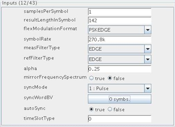
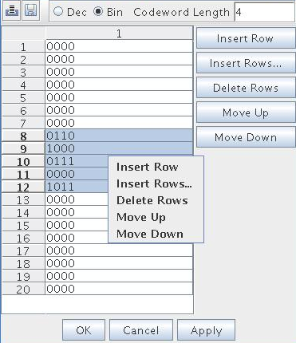

Editing input parameters
The Inputs panel shows input parameters for the selected standard.
About this task
This task is about modifying the input parameters.
Before you begin
Make sure that the signal analyzer is open and the demodulation tool is open.
Procedure
- To edit or modify input parameters, use the Inputs panel.
-
The title indicates the number of displayed input parameters and the number of total input
parameters. You can configure which input parameters are displayed in this dialog.

- Each row in the panel represents an input parameter with its name and value. You can edit the value straightforwardly. For vector type input parameters, you can edit the vector in a table editor by pressing the toggle button next to it. The text on the button tells you the dimension of the vector.
-
The title of the opened table editor is composed of the standard and the parameter name.
With the aid of the buttons and shortcut menu in the table editor you can insert a single row or
multiple rows, delete selected row(s) and move selected row(s) up or down. Upon the operation
of Insert Row, the new row(s) will be appended to the end of the table
if no row is selected or inserted below selected row(s). If the vector type is bit vector, you
should specify the codeword length (1 by default) at the top of the table editor. You can also
switch between decimal and binary representation. After finishing editing the vector, click the
OK or Apply button at the bottom to set the
vector parameter. In the event that you Do not want to apply the changes just click
Cancel. With the load/save icons at top-left of
the table editor you can save your current vector to a file or load an existing vector file
which was previously saved. Note that if you press the associated toggle button on the
Demodulation dialog to close the table editor, the vector will be applied to the parameter. The
following picture shows the bit vector editor.

- Using the load/save icons on the toolbar of the Demodulation dialog you can save current input and result parameter values to a file, or load a parameter file. Successfully loading a parameter file will overwrite the current input parameter values. Note that if a parameter file was loaded for the current standard and device in a previous session, this file will be automatically picked up in the file browser (as long as it still exists, otherwise no file is selected in the file browser), so that you can easily reuse it with just one mouse-click.
What to do next
Execute the demodulation.
Functional changes
- Introduced in SmarTest 7.1.2